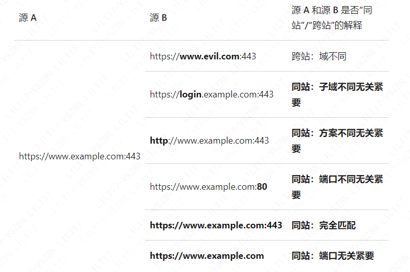

开发者工具之引荐来源网址政策
同源
来源（Origin）就是协议、主机名和端口的组合
- 协议又称方案
例如，假设 URL 是
https://www.example.com:443/foo，则“来源”为https://www.example.com:443方案、主机名和端口均相同的组合的网站视为“同源”，否则视为“跨源”。
同站
https://www.example.com:443
- 顶级域 ：
.com或.org、.github.io等，列在根区数据库中 - 完整站点名称：有效的顶级域加上它前面的域部分
example.com、my-project.github.io

有方案同站
http://www.example.com 和 https://www.example.com 被视为跨站，因为方案不匹配。
同站、同源在浏览器中的体现
Chrome 将请求与 Sec-Fetch-Site HTTP 标头一起发送。通过检查 Sec-Fetch-Site 的值，您可以确定请求是“同站”、“同源”还是“跨站”（“有方案同站”不是在 Sec-Fetch-Site 中获取）。
引荐来源策略（Referrer Policy）
Referrer 用来表示当前网页是来源于哪里，是请求头中的一个首部字段
Referrer Policy
- no-referrer
不发送 Referer 信息 - no-referrer-when-downgrade
如果从 HTTPS 网址链接到 HTTP 网址，不发送 Referer 字段，其他情况发送（包括 HTTP 网址链接到 HTTP 网址）。 - origin
Referer 字段一律只发送源信息（协议+域名+端口），不管是否跨域。 - origin-when-cross-origin
同源时，发送完整的 Referer 字段，跨域时发送源信息。 - same-origin
链接到同源网址（协议+域名+端口 都相同）时发送，否则不发送。 - strict-origin
如果从 HTTPS 网址链接到 HTTP 网址，不发送 Referer 字段，其他情况只发送源信息。 - strict-origin-when-cross-origin【浏览器默认策略】
同源时，发送完整的 Referer 字段；跨域时，如果 HTTPS 网址链接到 HTTP 网址，不发送 Referer 字段，否则发送源信息。 - unsafe-url
Referer 字段包含源信息、路径和查询字符串，不包含锚点、用户名和密码。
- no-referrer
如何设置 Policy（变更 Referer 策略）
优先级：元素级政策>页面级政策>浏览器默认
- rel 属性
- 标签
- Headers 请求头
1
2
3
4
5
6页面中地址一，则优先按元素级策略，走 no-referrer，而页面中其他元素（包括但不限于 a 标签）则按 meta 页面级策略执行
<meta name="referrer" content="strict-origin-when-cross-origin">
<a href="https://foo.com" rel="no-referrer" target="_blank">地址一</a>
<a href="https://bar.com" target="_blank">地址二</a>作用及使用场景
防盗链
以 CDN 加速为例，一般都提供了防盗链配置，其内部实现原理是按照 Referer 来源来判断是否在配置的白名单或者黑名单中，来决定资源能否可被访问。
埋点分析
埋点分析有一种情况是用于追溯用户的完整访问路径，这个时候可以依赖的就是 HTTP Referer，可以通过 Referer 来源逐步分析用户的来源网址和整体访问链路。
错误排查（接口日志）
用户隐私保护
目的其实是为了保护用户隐私，过于完整的 Referer 信息能够通过日志抓取到完整链路，也就意味着你的访问路径和来源是没有任何隐藏，这样可能会对隐私及网站的安全性带来一定的危害。